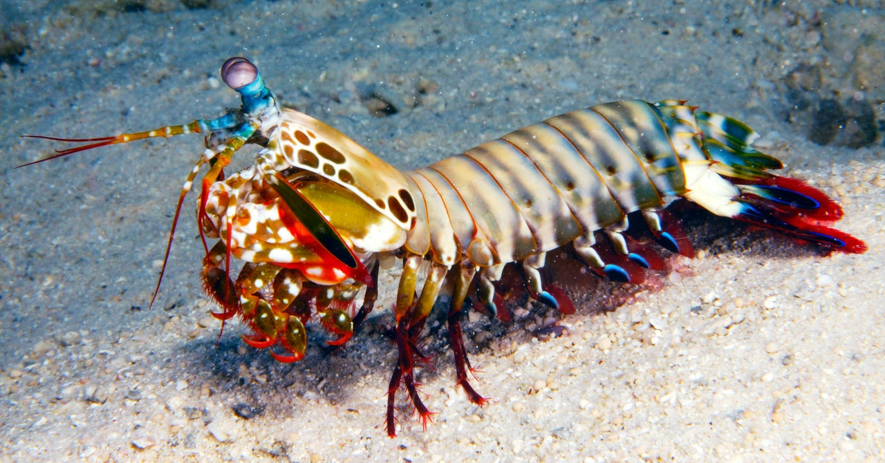

Mantis Shrimp
This deep-sea crustacean packs a powerful punch.
Kingdom
Animalia
Phylum
Arthopoda
Class
Malacostraca
Order
Stomatapoda
Family
Hanguana
Genus
ASquilla
Description
There are over 450 species of mantis shrimp, all a variety of different colours. They average a length of 10 cm, with some growing around 30 cm long. There are two main types of hunting for mantis shrimp: spearing and smashing. Smashing mantis shrimp have calcified forelimbs that they use to administer a powerful strike to both predators and prey. Spearing mantis shrimp have sharp forelimbs they use to pierce predators and prey.
Habitat and Diet
The diet of mantis shrimp differs, depending on their hunting style. The mantis shrimp who spear their prey typically eat softer creatures, such as worms, squid, and fish. Mantis shrimp who club their prey eat harder creatures, such as clams, snails, and smaller crustaceans.
Mantis shrimp live in burrows, both in tropical and subtropical waters. The substance of the burrows depends on the type of mantis shrimp: spearing shrimp dwell in soft substrate, smashing shrimp in harder substances. Both types of shrimp spend most of their lives in these burrows, though they may move to bigger burrows as they grow larger.
Intelligence
The mantis shrimp is highly intelligent. They exhibit complex social behaviour, with ritualised fighting and protective activities. With a great capacity to learn and retain knowledge, mantis shrimp can recognise and interact with other shrimp. Their eyes are also thought to be the most complex in the animal kingdom, with great colour and depth perception, as well as polarisation sensitivity, making these creatures’ brains more efficient.
Mantis Shrimp facts
1.
The eyes of mantis shrimp can detect both cancer and neuron activity.2.
Mantis shrimp can attack with their spears/clubs at 23m/s with an acceleration of 10,400g.3.
Depending on the species of mantis shrimp, they are either active in the day or nocturnal!4.
The largest recorded mantis shrimp was 46 cm long!Behaviour and Reproduction
Mantis shrimp exhibit complex behaviours, such as interacting with their neighbours, ritualised fighting, and bonding in life-long relationships. Their movements are mostly typical of crustaceans, though there is one species of mantis shrimp known to flip in circles.
These behavioural patterns, as well as fluorescent markers on the shrimps’ bodies, are used to attract mating partners. Some mantis shrimp mate with a variety of partners over their lifespans, whilst others mate for life. Overall, mantis shrimp can mate a total of 30 times. The female lays the eggs, kept in burrows or under their tails. Both male and female shrimp take care of the eggs, though there are some mantis shrimp species where the male hunts for food whilst the female protects the eggs. When these eggs hatch, they spend three months as plankton.
Threats
Mantis shrimp are abundant, eaten in several cuisines across the world. Populations are especially dense off the coast of Japan and Vietnam. There are no great threats to the mantis shrimp; however, in Hawaii, mantis shrimp have grown to unnaturally large sizes in the contaminated water of artificial waterways.